[CCNA图文笔记]-25-帧中继实例详解
引言
这篇文章介绍一下帧中继相关知识，包括帧中继的术语、帧中继运行方式、帧中继本地管理接口、帧中继全局寻址、基于物理接口的帧中继和基于子接口的帧中继等。文章的后半部分会使用几个实例来演示前面介绍的理论。
文章目录
- 0×1.帧中继概述
- a.帧中继术语
- b.帧中继运行方式
- c.帧中继寻址方式
- d.帧中继水平分隔潜在问题
- 0×2.帧中继配置实例
- a.配置帧中继路由器
- b.配置其他路由器使用帧中继网络
- c.配置帧中继能够ping通自己
- d.配置帧中继使用静态映射
- e.RIP over 帧中继
- f.配置帧中继子接口
- 0×3.EIGRP over 帧中继
- a.在帧中继物理接口上运行EIGRP
- b.在帧中继子接口上运行EIGRP
- c.在帧中继点到点接口上运行EIGRP
0×1.帧中继概述
Frame Relay，简称FR，可以将它看做X.25协议的简化版本，帧中继网络中不考虑传输差错问题，其中的结点只做帧的转发操作，不需要执行接收确认和请求重发等操作；帧中继是一种严格意义上的二层协议。
在帧中继网络中使用VC（Virtual Circuit，虚电路）来互连各个分支，并不需要两个分支之间有单独的物理链路。下面是物理专线和帧中继虚电路的示意图：
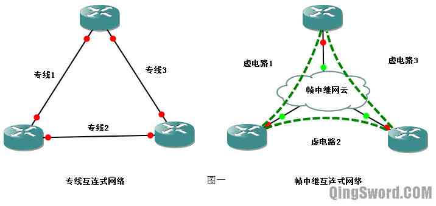使用虚电路的最主要好处就是配置方便，建立和拆除虚电路只需要使用命令配置即可，所以虚电路并非真正的物理链路，只是在现有网络的基础上添加的一系列转发规则，就好像在源和目的间存在一条专线一样；相比之下专线则需要综合布线施工，建立和拆除难度较大。
帧中继的工作范围在DTE设备和帧中继交换机之间。
a.帧中继术语
1）VC（Virtual Circuit，虚电路）
帧中继网络中两台DTE设备之间的连接称为虚电路，现在常用的虚电路为PVC（Permanent Virtual Circuit，永久虚电路），PVC由运营商预先配置。
2）DLCI（Data Link Connection Identifier，数据链路连接标识符）
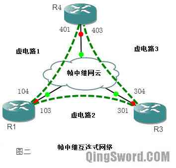
DLCI是源设备和目的设备之间标识逻辑电路的一个数据值，该数据值只具有本地意义。在图二中，R1上的DLCI号103标识的是R1到R3的连接，R1上的DLCI号104标识的是R1到R4的连接。不同DTE设备上的DLCI号可以相同，但在同一台DTE设备上不能用相同的DLCI号来标识到不同的连接。
DLCI号的范围是0-1023，其中0-15以及1008-1023被保留用作特殊用途，所以用户可以配置的DLCI号为16-1007。
3）LMI（Local Management Interface，本地管理接口）
LMI是用户端和帧中继交换机之间的信令标准，负责管理设备之间的连接，维护设备的状态。LMI被用来获知路由器被分配了哪些DLCI，确定PVC的操作状态，有哪些可用的PVC，另外还用来发送维持分组，确保PVC处于激活状态。
LMI的类型有三种：ANSI、Cisco、Q933A，DTE端的LMI配置要和帧中继上的一致，否则LMI不能正常工作，进而导致PVC失败。思科路由上默认的LMI类型为Cisco。
除了上面三个比较常见外，还有下面这些术语，有兴趣的朋友可以自己去查一下每个术语的解释：
承诺信息速率（CIR）
承诺突发（BC）
超量突发（BE）
前向显示拥塞通知（FECN）
后向显示拥塞通知（BECN）
允许丢弃（DE）
b.帧中继运行方式
这一部分结合下面的图三来介绍帧中继是如何工作的，数据包是如何被转发的。
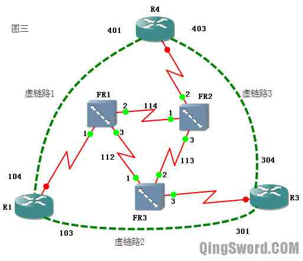1）帧中继帧格式
帧中继的帧和以太网帧一样，也工作在数据链路层，帧的格式如下图：
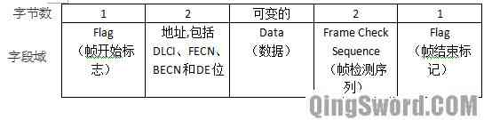帧中继帧的各字段解释如下：
Flag标志：标志帧的开始和结束
地址：地址字段2个字节中包含了DLCI号（帧中继的帧中只有一个DLCI号，即去往的目的地的DLCI号，2个字节中的10个比特用来储存这个DLCI号）；拥塞控制（Congestion Control）占3比特，其中包括1比特的FECN位，1比特的BECN位和1比特的DE位；除此之外地址域中还包含3个比特的其他值。
数据：是一个可变长的字段，包含了封装的上层协议数据。
帧效验序列：用来保证传输数据的完整性。
2）帧中继中的帧转发方式
在图三中，假设R1要将数据发往R3，R1封装DLCI号103（至于为什么R1知道发往R3要封装103这个在下面的帧中继寻址方式中会详细的介绍），将封装好的帧发往帧中继交换机FR1。根据FR1上管理员的配置，FR1知道如果从接口1接收到DLCI号为103的帧，应该将DLCI号修改成112并从接口3发出。此时帧到达FR3，FR3也根据配置得知，从自己的1接口接收到的DLCI号为112的帧，应该将DLCI号修改成301，并从3号接口发出。此时R3接收到FR3发过来的帧中继帧，解封装后交给上层处理。
从上面的工作方式中可以看出，只要R1封装DLCI号103的帧，就能将数据发往R3，帧中继网云使用DLCI号103和DLCI号301在R1和R3之间建立了一条永久虚电路（PVC），同理R1到R4可以封装104，R4到R1可以封装401。
3）帧中继交换表
在图三的帧中继网络中，FR1-3三台帧中继交换机上都维护着一个帧中继交换表，下面是FR1的帧中继交换表的样式：
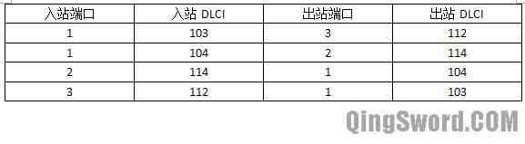c.帧中继寻址方式
这一部分将介绍"反向ARP（Inverse ARP）"，帧中继中的反向ARP是根据DLCI号解析IP的一个过程，和以太网中通过ARP解析MAC地址很相似。下图描述了这一过程是如何进行的：
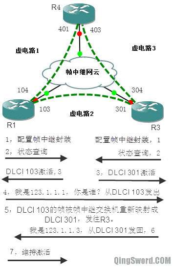以上图（图6）R1和R3之间的通信为例，假设R1和帧中继交换机相连的物理接口IP是123.1.1.1，R3和帧中继交换机相连的物理接口IP是123.1.1.3，首先第一步在R1和R3的物理接口上配置帧中继封装（图中第1步），接口开启后，R1和R3会自动向帧中继交换机发送查询信息，该消息可以向帧中继交换机通知本路由状态，还可以查询有哪些可用的DLCI号（图中第2步）。
帧中继交换机通知R1，DLCI号103和104是激活的（图中第3步），可以使用。对于每个激活的DLCI号，R1发送一个反向ARP请求分组，宣告自己的IP，并且封装对应的DLCI号(图中第4步)。
从这一点可以看出，帧中继是不支持广播的，帧中继网络默认是NBMA（Non-Broadcast Multiple Access，非广播多路访问），但可以通过发送多个帧拷贝来解决广播问题。
帧中继网云将R1发来的DLCI号103替换成301发往R3（图中第5步，实际帧中继网络中可能存在很多帧中继交换机，这里假设中间只有一台，便于讲解）。
R3收到帧中继交换机发来的帧，DLCI号是301，R3处理该数据帧并进行应答，R3封装DLCI号为301，并且告知自己的IP是123.1.1.3（图片中第6步），然后从自己的物理接口发回。
帧中继交换机收到这个DLCI号是301的帧，根据自己的交换表，将DLCI号改成103发往R1，R1收到这个应答后在本地的映射中添加R3的IP123.1.1.3和对应的DLCI号103，以后发往123.1.1.3的数据帧就用DLCI号103封装。
最后图中第7步，R1继续发送维持消息，默认10秒一次，此维持消息可以验证帧中继交换机是否处于激活状态。反向ARP默认的发送时间是60秒。
同理R3和R4也可以使用相同的方法获得对方的IP地址和对应的DLCI号。
d.帧中继水平分隔潜在问题
有时候不需要建立全互连型帧中继网络，比如下面这中情况：
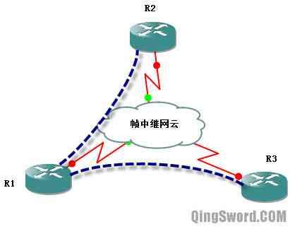在这种星型拓扑结构中R1和R2以及R3通过虚电路相连，R2和R3之间没有建立虚电路，R1就像以太网中的一个Hub，R2或R3将路由信息发给R1，因为水平分隔的原因，R1不会将从一个接口接收到的路由信息再从这个接口发回，导致R1上面有所有分支的路由信息，而分支路由间无法学习到路由信息。
解决这一问题的方法是关闭水平分隔，或者使用多个点到点子接口，在后面的配置实例中会详细介绍到。
0×2.帧中继配置实例
a.配置帧中继路由器
帧中继的所有实验都在GNS3中完成，配置下面这张拓扑图，图中四台路由器均为c3640，将R2配置成帧中继交换机，用来模拟帧中继网云，R1、R3、R4是DTE端的路由器配置帧中继封装：
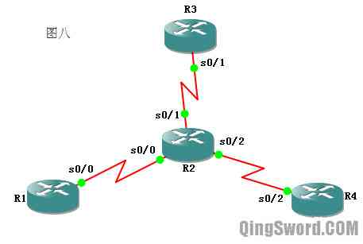首先配置R2成为帧中继交换机。
R2配置：
Router>en Router#conf t Router(config)#host Frame-relay-SW /*配置成帧中继交换机*/ Frame-relay-SW(config)#frame-relay switching /*进入和R1相连的接口*/ Frame-relay-SW(config)#int s 0/0 /*使用帧中继封装*/ Frame-relay-SW(config-if)#encapsulation frame-relay /* * 配置帧中继LMI类型为ANSI，这一句是可选配置， * 如果不配置，思科使用Cisco作为默认的LMI类型 */ Frame-relay-SW(config-if)#frame-relay lmi-type ansi /* * 为了帧中继交换需要将接口改变成DCE， * 这和具体链接的是DCE还是DTE接口无关。 */ Frame-relay-SW(config-if)#frame-relay intf-type dce /* * 将s0/0接口接收到的DLCI号103的帧，替换成301从s0/1接口发出。 * 将s0/0接收到的DLCI号104的帧，替换成401从s0/2接口发出。 */ Frame-relay-SW(config-if)#frame-relay route 103 interface s 0/1 301 Frame-relay-SW(config-if)#frame-relay route 104 interface s 0/2 401 Frame-relay-SW(config-if)#no shut /*打开接口*/ /*配置和R3相连的s0/1接口*/ Frame-relay-SW(config-if)#int s 0/1 Frame-relay-SW(config-if)#encapsulation frame-relay Frame-relay-SW(config-if)#frame-relay lmi-type ansi Frame-relay-SW(config-if)#frame-relay intf-type dce Frame-relay-SW(config-if)#frame-relay route 301 interface s 0/0 103 Frame-relay-SW(config-if)#frame-relay route 304 interface s 0/2 403 Frame-relay-SW(config-if)#no shut /*配置和R4相连的s0/2接口*/ Frame-relay-SW(config-if)#int s 0/2 Frame-relay-SW(config-if)#encapsulation frame-relay Frame-relay-SW(config-if)#frame-relay lmi-type ansi Frame-relay-SW(config-if)#frame-relay intf-type dce Frame-relay-SW(config-if)#frame-relay route 403 interface s 0/1 304 Frame-relay-SW(config-if)#frame-relay route 401 interface s 0/0 104 Frame-relay-SW(config-if)#no shut Frame-relay-SW(config-if)#end
帧中继交换机配置完成后继续下面的配置，配置帧中继网络中其他路由器(R1、R3、R4)。
b.配置其他路由器使用帧中继网络
R1配置：
/*配置与帧中继相连的接口使用帧中继封装，再配置IP地址*/ R1(config)#int s 0/0 R1(config-if)#encapsulation frame-relay R1(config-if)#ip add 123.1.1.1 255.255.255.0 R1(config-if)#no shut R1(config-if)#end
R3配置：
R3(config)#int s 0/1 R3(config-if)#enc f /*命令简写*/ R3(config-if)#ip add 123.1.1.3 255.255.255.0 R3(config-if)#no shut R3(config-if)#end
R4配置：
R4(config)#int s 0/2 R4(config-if)#ip add 123.1.1.4 255.255.255.0 R4(config-if)#enc f R4(config-if)#no shut R4(config-if)#end
配置完成后测试R1、R3、R4都能互相ping通，使用下面的命令可以查看帧中继DLCI号的映射情况：
R1#show frame-relay map /* * "ip 123.1.1.3 dlci 103" * 去往123.1.1.3的帧，封装的DLCI号是103， * 本文在帧中继的反向ARP中介绍过这个映射是如何得到的。 * * "dynamic"表示这种映射关系是动态学习到的。 * * "broadcast"表示帧中继上支持广播。 * * "active"表示链路是正常的。 */ Serial0/0 (up): ip 123.1.1.3 dlci 103(0x67,0x1870), dynamic, broadcast,, status defined, active /*同理，发往123.1.1.4的帧用DLCI号104封装。*/ Serial0/0 (up): ip 123.1.1.4 dlci 104(0x68,0x1880), dynamic, broadcast,, status defined, active
通过下面的命令查看PVC建立和DLCI号的分配情况：
R1#show frame-relay pvc PVC Statistics for interface Serial0/0 (Frame Relay DTE) /* * 主要介绍下面这两句，其中的详细参数暂时不需要了解， * R1使用LMI从帧中继交换机（R2）那学到了两条本地可用的DLCI号， * 103和104，"STATUS=ACTIVE"表示PVC链路工作正常， * 如果"STATUS=INACTIVE"表示不可用，一般是远端配置有问题， * "STATUS=DELETED"则表示本地配置可能有问题。 */ DLCI=103,DLCI USAGE=LOCAL, PVC STATUS=ACTIVE, INTERFACE=Serial0/0 .... DLCI=104,DLCI USAGE=LOCAL, PVC STATUS=ACTIVE, INTERFACE=Serial0/0 ....
通过下面的命令查看R1接口的LMI类型：
R1#show frame-relay lmi /* * R1会自动调整默认的LMI类型和帧中继交换机上配置的一致， * "TYPE=ANSI"表示R1的s0/0接口的LMI类型是ANSI。 */ LMI Statistics for interface Serial0/0(Frame Relay DTE) LMI TYPE=ANSI
在上面的配置中可能出现下面的问题：
如果使用"show frame-relay pvc"查看路由器上面学不到DLCI号，请检查物理接口是否打开（包括帧中继交换机上的物理接口），本地和帧中继交换机相连的接口的封装协议是否被配置成了帧中继，本地接口的LMI类型是否和帧中继交换机的一致。
可以通过查看接口信息来验证：
/* * 接口是否开启"Serial0/0 is up, line protocol is up" * 封装协议"Encapsulation FRAME-RELAY" * LMI类型"LMI type is ANSI" */ R1#show interfaces s 0/0 Serial0/0 is up, line protocol is up .... Encapsulation FRAME-RELAY, crc 16, loopback not set .... LMI DLCI 0 LMI type is ANSI Annex D frame relay DTE ....
现在R1、R3、R4都能互相ping通对方，但是还存在一个问题，他们ping不通自己的IP，从上面的"show frame-relay map"也可以看出，R1的帧中继映射中没有自己的"123.1.1.1"的映射，它不知道发往这个IP需要封装什么DLCI号，下面继续配置，让他们都能ping通自己。
c.配置帧中继能够ping通自己
为了它们能够ping通自己的IP，需要使用静态映射命令：
/* * "IP地址"是要去往的目的地址， * "DLCI号"是这个IP对应的DLCI， * "[broadcast]"可选参数使链路支持广播， * 配置动态路由协议时必须携带此参数， * "[cisco|ietf]"中有两个可选参数， * 如果网络中不全是思科设备，存在不同设备互连， * 建议使用"ietf"参数。 */ R1(config-if)#frame-relay map ip ip地址 DLCI号 [broadcast] [cisco|ietf]
R1、R3、R4添加能ping通自己的静态映射；
R1配置：
R1(config)#int s 0/0 R1(config-if)#frame-relay map ip 123.1.1.1 103 broadcast ietf R1(config-if)#end
R3配置:
R3(config)#int s 0/1 R3(config-if)#frame-relay map ip 123.1.1.3 301 broadcast ietf R3(config-if)#end
R4配置:
R4(config)#int s 0/2 R4(config-if)#frame-relay map ip 123.1.1.4 401 broadcast ietf R4(config-if)#end
这样R1、R3、R4就能够ping通自己的IP了：
/*查看帧中继映射*/ R1#show frame-relay map Serial0/0 (up): ip 123.1.1.3 dlci 103(0x67,0x1870), dynamic, broadcast,, status defined, active Serial0/0 (up): ip 123.1.1.4 dlci 104(0x68,0x1880), dynamic, broadcast,, status defined, active /* * 这一条是我们添加的静态映射，在没有指定ieft的时候， * 默认的帧中继封装是CISCO。 */ Serial0/0 (up): ip 123.1.1.1 dlci 103(0x67,0x1870), static, broadcast, IETF, status defined, active /* * 测试ping自己，虽然是ping自己，但是根据前面的映射可以得知， * 数据是到达了R3后再返回的，如果R3关闭物理接口s0/2, * 这里就会ping不通，大家可以测试一下。 */ R1#ping 123.1.1.1 !!!!!
到这里为止，帧中继网络中的三台路由器都使用了反向ARP从帧中继交换机上获取到DLCI和对应的IP地址，下面一部分将介绍如何关闭反向ARP，使用全手动静态配置来配置帧中继映射。
d.配置帧中继使用静态映射
这一部分手动配置DLCI的静态映射，首先关闭反向ARP，然后清除通过反向ARP学习到的动态映射缓存，然后使用手动配置。
R1配置：
R1(config)#int s 0/0 /*关闭反向ARP*/ R1(config-if)#no frame-relay inverse-arp R1(config-if)#end /*清除反向ARP学到的映射缓存*/ R1#clear frame-relay inarp R1#conf t /*在接口下添加静态映射*/ R1(config)#int s 0/0 R1(config-if)#frame-relay map ip 123.1.1.3 103 broadcast ietf R1(config-if)#frame-relay map ip 123.1.1.4 104 broadcast ietf R1(config-if)#end
R3配置：
R3(config)#int s 0/1 R3(config-if)#no frame-relay inverse-arp R3(config-if)#end R3#clear frame-relay inarp R3#conf t R3(config)#int s 0/1 R3(config-if)#frame-relay map ip 123.1.1.1 301 broadcast ietf R3(config-if)#frame-relay map ip 123.1.1.4 304 broadcast ietf R3(config-if)#end
R4配置：
R4(config)#int s 0/2 R4(config-if)#no frame-relay inverse-arp R4(config-if)#end R4#clear frame-relay inarp R4#conf t R4(config)#int s 0/2 R4(config-if)#frame-relay map ip 123.1.1.1 401 broadcast ietf R4(config-if)#frame-relay map ip 123.1.1.3 403 broadcast ietf R4(config-if)#end
配置完成后在R1上查看帧中继映射表：
/*可以看到状态全部变成了"static"即静态映射。*/ R1#show frame-relay map Serial0/0 (up): ip 123.1.1.3 dlci 103(0x67,0x1870), static, broadcast, IETF, status defined, active Serial0/0 (up): ip 123.1.1.4 dlci 104(0x68,0x1880), static, broadcast, IETF, status defined, active Serial0/0 (up): ip 123.1.1.1 dlci 103(0x67,0x1870), static, broadcast, IETF, status defined, active
e.RIP over 帧中继
帧中继作为二层链路，上面可以运行各种动态路由协议。在GNS3中完成下图配置，在帧中继网络中运行RIP协议。
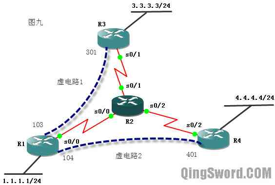R2被配置成帧中继交换机，其中只有两条虚电路R1-R3和R1-R4，R1 s0/0的IP为123.1.1.1，R3 s0/1的IP为123.1.1.3，R4 s0/2的IP为123.1.1.4，它们上面各有一个回环接口，这些接口都被发布到RIP协议中。
首先将R2配置成帧中继交换机：
Router>en Router#conf t Router(config)#host FR-SW FR-SW(config)#frame-relay switching FR-SW(config)#int s 0/0 FR-SW(config-if)#encapsulation frame-relay FR-SW(config-if)#frame-relay lmi-type ansi FR-SW(config-if)#frame-relay intf-type dce /*仅配置R1-R3以及R1-R4的虚电路*/ FR-SW(config-if)#frame-relay route 103 interface s 0/1 301 FR-SW(config-if)#frame-relay route 104 interface s 0/2 401 FR-SW(config-if)#int s 0/1 FR-SW(config-if)#encapsulation frame-relay FR-SW(config-if)#frame-relay lmi-type ansi FR-SW(config-if)#frame-relay intf-type dce FR-SW(config-if)#frame-relay route 301 interface s 0/0 103 FR-SW(config-if)#no shut FR-SW(config-if)#int s 0/2 FR-SW(config-if)#encapsulation frame-relay FR-SW(config-if)#frame-relay lmi-type ansi FR-SW(config-if)#frame-relay intf-type dce FR-SW(config-if)#frame-relay route 401 interface s 0/0 104 FR-SW(config-if)#no shut FR-SW(config-if)#end
R1配置：
R1(config)#int s 0/0 /*使用帧中继封装*/ R1(config-if)#encapsulation frame-relay /*关闭反向ARP，使用手动静态映射配置*/ R1(config-if)#no frame-relay inverse-arp /*配置静态映射*/ R1(config-if)#frame-relay map ip 123.1.1.3 103 broadcast ietf R1(config-if)#frame-relay map ip 123.1.1.1 103 broadcast ietf R1(config-if)#frame-relay map ip 123.1.1.4 104 broadcast ietf R1(config-if)#ip add 123.1.1.1 255.255.255.0 R1(config-if)#no shut R1(config-if)#int lo 0 R1(config-if)#ip add 1.1.1.1 255.255.255.0 R1(config-if)#no shut R1(config-if)#router rip /*配置RIP，宣告所有接口*/ R1(config-router)#net 1.0.0.0 R1(config-router)#net 123.0.0.0 R1(config-router)#end
R3配置：
R3(config)#int s 0/1 R3(config-if)#encapsulation frame-relay R3(config-if)#no frame-relay inverse-arp R3(config-if)#frame-relay map ip 123.1.1.1 301 broadcast ietf /*让R3能ping通自己*/ R3(config-if)#frame-relay map ip 123.1.1.3 301 broadcast ietf /*因为R3和R4之间并没有虚电路，所以发往R4的数据要先封装成301发往R1*/ R3(config-if)#frame-relay map ip 123.1.1.4 301 broadcast ietf R3(config-if)#ip add 123.1.1.3 255.255.255.0 R3(config-if)#no shut R3(config-if)#int lo0 R3(config-if)#ip add 3.3.3.3 255.255.255.0 R3(config-if)#no shut R3(config-if)#router rip R3(config-router)#net 3.0.0.0 R3(config-router)#net 123.0.0.0 R3(config-router)#end
R4配置：
R4(config)#int s 0/2 R4(config-if)#encapsulation frame-relay R4(config-if)#no frame-relay inverse-arp R4(config-if)#frame-relay map ip 123.1.1.1 401 broadcast /*让R4能ping通自己*/ R4(config-if)#frame-relay map ip 123.1.1.4 401 broadcast /*因为R4和R3之间没有配置虚电路，发往R3的数据先发往R1*/ R4(config-if)#frame-relay map ip 123.1.1.3 401 broadcast R4(config-if)#ip add 123.1.1.4 255.255.255.0 R4(config-if)#no shut R4(config-if)#int lo 0 R4(config-if)#ip add 4.4.4.4 255.255.255.0 R4(config-if)#no shut R4(config-if)#router rip R4(config-router)#net 4.0.0.0 R4(config-router)#net 123.0.0.0 R4(config-router)#end
配置完成后全网后能互相通信，在R4上查看路由表和帧中继映射表：
/*显示R4已经学习到R1和R3上面的回环接口信息*/ R4#show ip route Gateway of last resort is not set R 1.0.0.0/8 [120/1] via 123.1.1.1, 00:00:18, Serial0/2 R 3.0.0.0/8 [120/2] via 123.1.1.1, 00:00:18, Serial0/2 4.0.0.0/24 is subnetted, 1 subnets C 4.4.4.0 is directly connected, Loopback0 123.0.0.0/24 is subnetted, 1 subnets C 123.1.1.0 is directly connected, Serial0/2 /*静态映射全部是激活可用的*/ R4#show frame-relay map Serial0/2 (up): ip 123.1.1.3 dlci 401(0x191,0x6410), static, broadcast, IETF, status defined, active Serial0/2 (up): ip 123.1.1.4 dlci 401(0x191,0x6410), static, broadcast, IETF, status defined, active Serial0/2 (up): ip 123.1.1.1 dlci 401(0x191,0x6410), static, broadcast, IETF, status defined, active /* * 这个时候假设R4去ping 3.3.3.3，首先R4查询路由表， * 发现"3.0.0.0/8 [120/2] via 123.1.1.1", * 发往3.0.0.0/8网段的数据要发给123.1.1.1即R1， * R4再查询帧中继映射表，发现"ip 123.1.1.1 dlci 401" * 所以R4用DLCI号401封装这个帧发往R1。 */
从上面的输出中并没有出现上面"帧中继水平分隔潜在问题"中提到的水平分隔问题，这是因为帧中继物理接口默认关闭了水平分隔，在R1上查看接口信息：
R1#show ip int s 0/0 Serial0/0 is up, line protocol is up .... Split horizon is disabled /*水平分隔是关闭的*/ ....
可以使用下面的命令打开水平分隔：
R1(config)#int s 0/0 R1(config-if)#ip split-horizon R1(config-if)#end
打开水平分隔后稍等一段时间，RIP收敛后，R3上面就看不到R4回环接口的路由了，同样R4上面也看不到R3的回环接口路由了。
除了关闭水平分隔外，还可以使用接下来介绍的方法，使用点到点子接口来解决水平分隔在帧中继网络中导致的问题。
f.配置帧中继子接口
这一部分来配置一个稍微复杂一点的拓扑，在这个拓扑中会综合运用到两种子接口：点到点子接口(Point-to-Point)、多点子接口(Multipoint)。
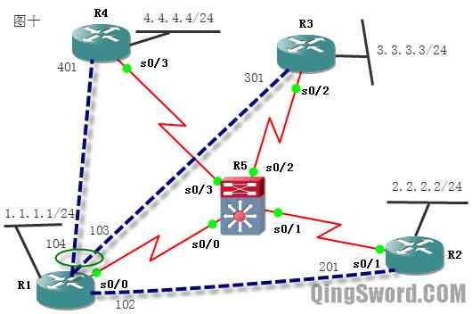如上图所示，R5被配置成帧中继交换机，其中有三条虚电路R1-R2，R1-R3，R1-R4，在R1的s0/0接口上启用了子接口，其中s0/0.1用来连接R2，是一个点到点子接口，s0/0.2被用来连接R3和R4，是一个多点子接口。R1 s0/0.1的IP为12.1.1.1、s0/0.2的IP地址为134.1.1.1，R2的s0/1的IP地址为12.1.1.2，R3的s0/2的IP地址为134.1.1.3，R4的s0/3的IP地址为134.1.1.4。每个路由上都有一个回环接口，IP如图所示。在这个帧中继网络上运行RIP协议，测试多点子接口存在的水平分隔问题。
首先配置R5成为帧中继交换机：
Router>en Router#conf t Router(config)#host RF-SW RF-SW(config)#frame-relay switch RF-SW(config)#int s 0/0 RF-SW(config-if)#encap frame RF-SW(config-if)#frame lmi-type ansi RF-SW(config-if)#frame intf-type dce RF-SW(config-if)#frame route 102 int s 0/1 201 RF-SW(config-if)#frame route 103 int s 0/2 301 RF-SW(config-if)#frame route 104 int s 0/3 401 RF-SW(config-if)#no shut RF-SW(config-if)#int s 0/1 RF-SW(config-if)#encap frame RF-SW(config-if)#frame lmi-type ansi RF-SW(config-if)#frame intf-type dce RF-SW(config-if)#frame route 201 int s 0/0 102 RF-SW(config-if)#no shut RF-SW(config-if)#int s 0/2 RF-SW(config-if)#encap frame RF-SW(config-if)#frame lmi-type ansi RF-SW(config-if)#frame intf-type dce RF-SW(config-if)#frame route 301 int s 0/0 103 RF-SW(config-if)#no shut RF-SW(config-if)#int s 0/3 RF-SW(config-if)#encap frame RF-SW(config-if)#frame lmi-type ansi RF-SW(config-if)#frame intf-type dce RF-SW(config-if)#frame route 401 int s 0/0 104 RF-SW(config-if)#no shut RF-SW(config-if)#end
在R1上配置点到点和多点子接口：
R1(config)#int s 0/0 R1(config-if)#encap frame R1(config-if)#no frame inverse-arp R1(config-if)#no shut /*物理接口只需要打开即可*/ /*配置点到点子接口*/ R1(config-if)#int s 0/0.1 point-to-point R1(config-subif)#ip add 12.1.1.1 255.255.255.0 /* * 点到点子接口不需要和物理接口一样配置静态映射， * 只要指明该接口使用的DLCI号即可， * 点到点子接口上去往该子接口的IP地址（12.1.1.1） * 或远端（R2的12.1.1.2）的数据都使用这个DLCI号封装。 */ R1(config-subif)#frame-relay interface-dlci 102 /*配置多点子接口*/ R1(config-fr-dlci)#int s 0/0.2 multipoint R1(config-subif)#ip add 134.1.1.1 255.255.255.0 /*多点子接口的静态映射和物理接口相同*/ R1(config-subif)#frame-relay map ip 134.1.1.1 103 broadcast ietf R1(config-subif)#frame-relay map ip 134.1.1.4 104 broadcast ietf R1(config-subif)#frame-relay map ip 134.1.1.3 103 broadcast ietf R1(config-subif)#int lo 0 R1(config-if)#ip add 1.1.1.1 255.255.255.0 R1(config-if)#no shut R1(config-if)#router rip /*启用RIP协议*/ R1(config-router)#net 1.0.0.0 R1(config-router)#net 12.0.0.0 R1(config-router)#net 134.1.0.0 R1(config-router)#end
R2配置：
R2(config)#int s 0/1 R2(config-if)#encapsulation frame-relay R2(config-if)#no frame-relay inverse-arp R2(config-if)#frame-relay map ip 12.1.1.1 201 broadcast ietf R2(config-if)#frame-relay map ip 12.1.1.2 201 broadcast ietf R2(config-if)#ip add 12.1.1.2 255.255.255.0 R2(config-if)#no shut R2(config-if)#int lo 0 R2(config-if)#ip add 2.2.2.2 255.255.255.0 R2(config-if)#no shut R2(config-if)#router rip R2(config-router)#net 2.0.0.0 R2(config-router)#net 12.0.0.0 R2(config-router)#end
R3配置：
R3(config)#int s 0/2 R3(config-if)#encapsulation frame-relay R3(config-if)#no frame-relay inverse-arp /*配置静态映射，去往R1*/ R3(config-if)#frame-relay map ip 134.1.1.1 301 broadcast ietf /*因为R3和R4之间没有配置虚电路，所以去往R4要先发往R1*/ R3(config-if)#frame-relay map ip 134.1.1.4 301 broadcast ietf /*配置R3能够ping通自己*/ R3(config-if)#frame-relay map ip 134.1.1.3 301 broadcast ietf R3(config-if)#ip add 134.1.1.3 255.255.255.0 R3(config-if)#no shut R3(config-if)#int lo 0 R3(config-if)#ip add 3.3.3.3 255.255.255.0 R3(config-if)#no shut R3(config-if)#router rip R3(config-router)#net 3.0.0.0 R3(config-router)#net 134.1.0.0 R3(config-router)#end
R4配置:
R4(config)#int s 0/3 R4(config-if)#encapsulation frame-relay R4(config-if)#no frame-relay inverse-arp R4(config-if)#frame-relay map ip 134.1.1.1 401 broadcast ietf R4(config-if)#frame-relay map ip 134.1.1.3 401 broadcast ietf R4(config-if)#frame-relay map ip 134.1.1.4 401 broadcast ietf R4(config-if)#ip add 134.1.1.4 255.255.255.0 R4(config-if)#no shut R4(config-if)#int lo 0 R4(config-if)#ip add 4.4.4.4 255.255.255.0 R4(config-if)#no shut R4(config-if)#router rip R4(config-router)#net 4.0.0.0 R4(config-router)#net 134.1.0.0 R4(config-router)#end
可以在R1上查看子接口信息来验证默认情况下，点到点子接口和多点子接口的水平分隔都是打开的：
R1#show ip interface s 0/0.1 Serial0/0.1 is up, line protocol is up .... Split horizon is enabled .... R1#show ip interface s 0/0.2 Serial0/0.2 is up, line protocol is up .... Split horizon is enabled ....
在R2的多点子接口上连接了两台路由器R3和R4，查看R3的路由表：
R3#show ip route /*从路由表中看不到R4的回环接口的信息*/ R 1.0.0.0/8 [120/1] via 134.1.1.1, 00:00:28, Serial0/2 R 2.0.0.0/8 [120/2] via 134.1.1.1, 00:00:28, Serial0/2 3.0.0.0/24 is subnetted, 1 subnets C 3.3.3.0 is directly connected, Loopback0 R 12.0.0.0/8 [120/1] via 134.1.1.1, 00:00:28, Serial0/2 134.1.0.0/24 is subnetted, 1 subnets C 134.1.1.0 is directly connected, Serial0/2
同样，在R4上面也看不到R3回环接口的信息，这就是因为R1上s0/0.2接口上默认的水平分隔设置导致的，用下面的命令关闭R1的s0/0.2子接口的水平分隔：
R1(config)#int s 0/0.2 R1(config-subif)#no ip split-horizon R1(config-subif)#end
再次查看R3的路由表：
R3#show ip route R 1.0.0.0/8 [120/1] via 134.1.1.1, 00:00:13, Serial0/2 R 2.0.0.0/8 [120/2] via 134.1.1.1, 00:00:13, Serial0/2 3.0.0.0/24 is subnetted, 1 subnets C 3.3.3.0 is directly connected, Loopback0 /*已经学习到了R4的回环接口信息*/ R 4.0.0.0/8 [120/2] via 134.1.1.1, 00:00:13, Serial0/2 R 12.0.0.0/8 [120/1] via 134.1.1.1, 00:00:13, Serial0/2 134.1.0.0/24 is subnetted, 1 subnets C 134.1.1.0 is directly connected, Serial0/2 /*测试ping R4回环接口*/ R3#ping 4.4.4.4 !!!!! /*成功*/
这一部分演示了路由器子接口配置（点到点子接口和多点子接口）以及多点子接口上面需要注意的水平分隔问题。
0×3.EIGRP over 帧中继
这一部分使用的拓扑图如下：
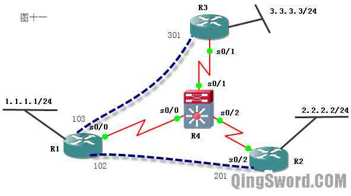R4是帧中继交换机，图中配置了两条虚电路R1-R2，R1-R3，R1-3各有一个回环接口IP如图所示。
首先配置R4成为帧中继交换机：
Router>en Router#conf t Router(config)#host RF-SW RF-SW(config)#frame-relay switching RF-SW(config)#int s 0/0 RF-SW(config-if)#encapsulation frame-relay RF-SW(config-if)#frame-relay lmi-type ansi RF-SW(config-if)#frame-relay intf-type dce RF-SW(config-if)#frame-relay route 103 int s 0/1 301 RF-SW(config-if)#frame-relay route 102 int s 0/2 201 RF-SW(config-if)#no shut RF-SW(config-if)#int s 0/1 RF-SW(config-if)#encapsulation frame-relay RF-SW(config-if)#frame-relay lmi-type ansi RF-SW(config-if)#frame-relay intf-type dce RF-SW(config-if)#frame-relay route 301 int s 0/0 103 RF-SW(config-if)#no shut RF-SW(config-if)#int s 0/2 RF-SW(config-if)#encapsulation frame-relay RF-SW(config-if)#frame-relay lmi-type ansi RF-SW(config-if)#frame-relay intf-type dce RF-SW(config-if)#frame-relay route 201 int s 0/0 102 RF-SW(config-if)#no shut RF-SW(config-if)#end
a.在帧中继物理接口上运行EIGRP
配置R1、R2、R3的物理接口使用帧中继封装，并且在上面运行EIGRP协议。
R1配置：
R1(config)#int s 0/0 R1(config-if)#encapsulation frame-relay R1(config-if)#no frame-relay inverse-arp R1(config-if)#frame-relay map ip 123.1.1.1 102 broadcast ietf R1(config-if)#frame-relay map ip 123.1.1.2 102 broadcast ietf R1(config-if)#frame-relay map ip 123.1.1.3 103 broadcast ietf R1(config-if)#ip add 123.1.1.1 255.255.255.0 R1(config-if)#no shut R1(config-if)#int lo 0 R1(config-if)#ip add 1.1.1.1 255.255.255.0 R1(config-if)#no shut R1(config-if)#router eigrp 100 R1(config-router)#net 1.1.1.0 0.0.0.255 R1(config-router)#net 123.1.1.0 0.0.0.255 R1(config-router)#end
R2配置：
R2(config)#int s 0/2 R2(config-if)#encapsulation frame-relay R2(config-if)#no frame-relay inverse-arp R2(config-if)#frame-relay map ip 123.1.1.1 201 broadcast ietf R2(config-if)#frame-relay map ip 123.1.1.2 201 broadcast ietf R2(config-if)#frame-relay map ip 123.1.1.3 201 broadcast ietf R2(config-if)#ip add 123.1.1.2 255.255.255.0 R2(config-if)#no shut R2(config-if)#int lo 0 R2(config-if)#ip add 2.2.2.2 255.255.255.0 R2(config-if)#no shut R2(config-if)#router eigrp 100 R2(config-router)#net 2.2.2.0 0.0.0.255 R2(config-router)#net 123.1.1.0 0.0.0.255 R2(config-router)#end
R3配置：
R3(config)#int s 0/1 R3(config-if)#encapsulation frame-relay R3(config-if)#no frame-relay inverse-arp R3(config-if)#frame-relay map ip 123.1.1.1 301 broadcast ietf R3(config-if)#frame-relay map ip 123.1.1.2 301 broadcast ietf R3(config-if)#frame-relay map ip 123.1.1.3 301 broadcast ietf R3(config-if)#ip add 123.1.1.3 255.255.255.0 R3(config-if)#no shut R3(config-if)#int lo 0 R3(config-if)#ip add 3.3.3.3 255.255.255.0 R3(config-if)#no shut R3(config-if)#router eigrp 100 R3(config-router)#net 3.3.3.0 0.0.0.255 R3(config-router)#net 123.1.1.0 0.0.0.255 R3(config-router)#end
配置完成后在R2上面查看路由表：
R2#show ip route D 1.0.0.0/8 [90/2297856] via 123.1.1.1, 00:00:02, Serial0/2 2.0.0.0/8 is variably subnetted, 2 subnets, 2 masks C 2.2.2.0/24 is directly connected, Loopback0 D 2.0.0.0/8 is a summary, 00:05:45, Null0 123.0.0.0/8 is variably subnetted, 2 subnets, 2 masks C 123.1.1.0/24 is directly connected, Serial0/2 D 123.0.0.0/8 is a summary, 00:05:45, Null0
在这里发现了问题，R2上面并没有学到去往R3的回环接口3.3.3.3的路由条目，同样R3上面也没有学习到R2的回环接口的条目，这是因为在R1的物理接口s0/0上开启了对EIGEP的水平分隔，通过下面的命令来关闭它：
R1(config)#int s 0/0 R1(config-if)#no ip split-horizon eigrp 100 R1(config-if)#end
关闭之后再次查看R2的路由表，就可以学习到去往R3回环接口的路由条目了。
b.在帧中继子接口上运行EIGRP
R2、R3、R4配置保持不变，直接右击R1选择"stop"，然后再次右击R1选择"Start"重启这台路由器，由于没有保存配置，R1将恢复初始状态，现在要在它的物理接口s0/0上配置多点子接口：
R1(config)#int s 0/0 R1(config-if)#encapsulation frame-relay R1(config-if)#no frame-relay inverse-arp R1(config-if)#no shut /*物理接口只需要打开即可*/ R1(config-if)#exit R1(config)#int s 0/0.1 multipoint /*配置多点子接口*/ R1(config-subif)#ip add 123.1.1.1 255.255.255.0 R1(config-subif)#frame-relay map ip 123.1.1.1 102 broadcast ietf R1(config-subif)#frame-relay map ip 123.1.1.2 102 broadcast ietf R1(config-subif)#frame-relay map ip 123.1.1.3 103 broadcast ietf /*多点子接口默认对EIGRP的水平分隔也是开启的，现在关闭它*/ R1(config-subif)#no ip split-horizon eigrp 100 R1(config-subif)#int lo 0 R1(config-if)#ip add 1.1.1.1 255.255.255.0 R1(config-if)#no shut R1(config-if)#router eigrp 100 R1(config-router)#net 1.1.1.0 0.0.0.255 R1(config-router)#net 123.1.1.0 0.0.0.255 R1(config-router)#end
c.在帧中继点到点接口上运行EIGRP
R4帧中继交换机的配置保持不变，直接右击R1、R2、R3选择"stop"，然后再次右击选择"Start"重启这几台路由器，将他们恢复初始状态， 现在要在R1的物理接口s0/0上配置点到点子接口，由于多点子接口下所有对应的路由属于同一网段，而点到点子接口，每个子接口对应了一个单独网段，每个子接口就像一个单独的物理接口一样工作，所以不会出现水平分隔的问题：
R1配置：
R1(config)#int s 0/0 R1(config-if)#encapsulation frame-relay R1(config-if)#no frame-relay inverse-arp R1(config-if)#no shut /*物理接口只需要开启*/ /*使用点到点子接口*/ R1(config-if)#int s 0/0.1 point-to-point R1(config-subif)#ip add 12.1.1.1 255.255.255.0 /* * 点到点子接口只需要封装DLCI号即可， * 从封装的DLCI号可以得知，这个点到点子接口是用来连接R2的。 */ R1(config-subif)#frame-relay interface-dlci 102 /*连接R3的点到点子接口*/ R1(config-fr-dlci)#int s 0/0.2 point-to-point R1(config-subif)#ip add 13.1.1.1 255.255.255.0 R1(config-subif)#frame-relay interface-dlci 103 R1(config-fr-dlci)#int lo 0 R1(config-if)#ip add 1.1.1.1 255.255.255.0 R1(config-if)#no shut R1(config-if)#router eigrp 100 R1(config-router)#net 1.1.1.0 0.0.0.255 R1(config-router)#net 12.1.1.0 0.0.0.255 R1(config-router)#net 13.1.1.0 0.0.0.255 R1(config-router)#end
R2配置：
R2(config)#int s 0/2 R2(config-if)#ip add 12.1.1.2 255.255.255.0 R2(config-if)#no shut R2(config-if)#encapsulation frame-relay R2(config-if)#no frame-relay inverse-arp R2(config-if)#frame-relay map ip 12.1.1.1 201 broadcast ietf R2(config-if)#frame-relay map ip 12.1.1.2 201 broadcast ietf R2(config-if)#int lo 0 R2(config-if)#ip add 2.2.2.2 255.255.255.0 R2(config-if)#router eigrp 100 R2(config-router)#net 2.2.2.0 0.0.0.255 R2(config-router)#net 12.1.1.0 0.0.0.255 R2(config-router)#end
R3配置：
R3(config)#int s 0/1 R3(config-if)#encapsulation frame-relay R3(config-if)#no frame-relay inverse-arp R3(config-if)#frame-relay map ip 13.1.1.3 301 broadcast ietf R3(config-if)#frame-relay map ip 13.1.1.1 301 broadcast ietf R3(config-if)#ip add 13.1.1.3 255.255.255.0 R3(config-if)#no shut R3(config-if)#int lo 0 R3(config-if)#ip add 3.3.3.3 255.255.255.0 R3(config-if)#no shut R3(config-if)#router eigrp 100 R3(config-router)#net 3.3.3.0 0.0.0.255 R3(config-router)#net 13.1.1.0 0.0.0.255 R3(config-router)#end
点到点子接口可以有效的避免水平分割带来的问题，但点到点子接口会占用更多的IP地址。